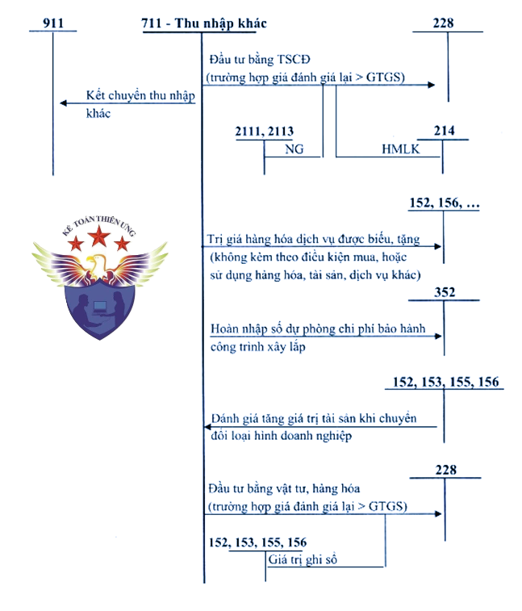
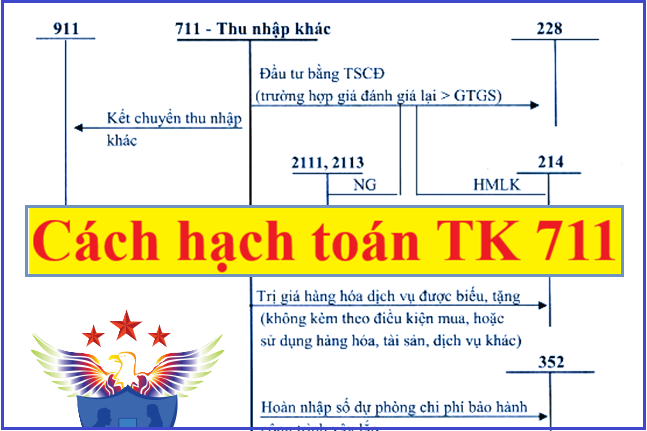

Hướng dẫn cách hạch toán thu nhập khác - Tài khoản 711 áp dụng chế độ kế toán theo Thông tư 99 mới nhất 2026, cách hạch toán nhận tiền bồi thường, hạch toán tiền hoàn thuế, hạch toán hàng được cho biếu tặng, hạch toán thu nhập khác từ thanh lý, nhượng bán TSCĐ.
1. Tài khoản 711 - Thu nhập khác
Nguyên tắc kế toán
a) Tài khoản này dùng để phản ánh các khoản thu nhập khác ngoài hoạt động sản xuất, kinh doanh của doanh nghiệp, gồm:
- Thu nhập từ nhượng bán, thanh lý TSCĐ;
- Chênh lệch giữa giá trị hợp lý tài sản được chia từ BCC cao hơn chi phí đầu tư xây dựng tài sản đồng kiểm soát;
- Chênh lệch lãi do đánh giá lại vật tư, hàng hóa, TSCĐ đưa đi góp vốn liên doanh, đầu tư vào công ty con, công ty liên kết, đầu tư dài hạn khác,...;
- Thu nhập từ nghiệp vụ bán và thuê lại tài sản;
- Các khoản thuế phải nộp khi bán hàng hóa, cung cấp dịch vụ nhưng sau đó được giảm, được hoàn;
- Thu tiền phạt do khách hàng vi phạm hợp đồng;
- Thu tiền bồi thường của bên thứ ba để bù đắp cho tài sản bị tổn thất (ví dụ thu tiền bảo hiểm được bồi thường và các khoản có tính chất tương tự);
- Thu các khoản nợ khó đòi đã xử lý xóa sổ;
- Thu các khoản nợ phải trả không xác định được chủ nợ hoặc đã xác định được là không phải trả nợ;
- Các khoản tiền thưởng của khách hàng liên quan đến tiêu thụ hàng hóa, sản phẩm, dịch vụ không tính trong doanh thu (nếu có);
- Thu nhập quà biếu, quà tặng bằng tiền, hiện vật, cổ phần, phần vốn góp tại doanh nghiệp khác,... của các tổ chức, cá nhân tặng cho doanh nghiệp (trừ khoản hỗ trợ, tài trợ, biếu, tặng được ghi tăng vốn đầu tư của chủ sở hữu theo quyết định của cấp có thẩm quyền).
- Giá trị số hàng khuyến mại không phải trả lại;
- Các khoản thu nhập khác ngoài các khoản nêu trên.
b) Khi có khả năng chắc chắn thu được các khoản tiền phạt vi phạm hợp đồng, doanh nghiệp phải xét bản chất của khoản tiền phạt để hạch toán phù hợp với nguyên tắc sau:
- Đối với bên bán: Tất cả các khoản tiền phạt vi phạm hợp đồng thu được từ bên mua nằm ngoài giá trị hợp đồng được ghi nhận là thu nhập khác.
- Đối với bên mua: Các khoản tiền phạt vi phạm hợp đồng thu được từ bên bán nằm ngoài giá trị hợp đồng được ghi nhận là thu nhập khác, trừ trường hợp người bán vi phạm hợp đồng nhưng người mua vẫn nhận hàng và người bán chấp nhận giảm trừ số tiền phạt vào số tiền người mua phải thanh toán thì giá trị hàng mua phải được ghi nhận theo số thực tế phải thanh toán cho nhà cung cấp sau khi trừ (-) khoản tiền phạt vi phạm hợp đồng được hưởng.
c) Trường hợp doanh nghiệp được tài trợ, biếu, tặng tài sản phi tiền tệ hoặc cổ phần/cổ phiếu/phần vốn góp mà chưa có thông tin về giá trị thì việc xác định giá trị của các tài sản này có thể căn cứ vào giá thị trường của tài sản hoặc giá trị theo đánh giá của Hội đồng đánh giá tài sản của doanh nghiệp hoặc tổ chức thẩm định giá chuyên nghiệp. Doanh nghiệp phải thuyết minh trên Báo cáo tài chính về căn cứ xác định giá trị tài sản phi tiền tệ đó.
Sơ đồ chữ T hạch toán tài khoản 711:

2. Kết cấu và nội dung Tài khoản 711 - Thu nhập khác
|
Bên Nợ |
Bên Có |
|
- Số thuế GTGT phải nộp (nếu có) tính theo phương pháp trực tiếp đối với các khoản thu nhập khác ở doanh nghiệp nộp thuế GTGT tính theo phương pháp trực tiếp. - Tại thời điểm kết thúc kỳ kế toán, kết chuyển các khoản thu nhập khác phát sinh trong kỳ sang tài khoản 911 để xác định kết quả kinh doanh. |
Các khoản thu nhập khác phát sinh trong kỳ.
|
| Tài khoản 711 - Thu nhập khác không có số dư cuối kỳ. | |
3. Cách hạch toán Thu nhập khác một số nghiệp vụ:
|
1. Kế toán nghiệp vụ nhượng bán, thanh lý TSCĐ: - Phản ánh số thu nhập về thanh lý, nhượng bán TSCĐ: Nợ các TK 111, 112, 131, 152, 153,... (tổng giá thanh toán) Có TK 711 - Thu nhập khác Có TK 3331 - Thuế GTGT phải nộp (33311) (nếu có). - Các chi phí phát sinh cho hoạt động thanh lý, nhượng bán TSCĐ, ghi: Nợ TK 811 - Chi phí khác Nợ TK 133 - Thuế GTGT được khấu trừ (nếu có) Có các TK 111, 112, 141, 331,... (tổng giá thanh toán). - Đồng thời ghi giảm nguyên giá TSCĐ thanh lý, nhượng bán, ghi: Nợ TK 214 - Hao mòn TSCĐ (giá trị hao mòn) Nợ TK 811 - Chi phí khác (giá trị còn lại)
Có các TK 211, 213 Xem thêm: Cách tính khấu hao TSCĐ đã qua sử dụng 2. Kế toán thu nhập khác phát sinh khi đánh giá lại vật tư, hàng hóa, TSCĐ đưa đi đầu tư vào công ty con, công ty liên kết, góp vốn đầu tư dài hạn khác: - Khi đầu tư vào công ty con, công ty liên doanh, công ty liên kết, đầu tư dài hạn khác dưới hình thức góp vốn bằng vật tư, hàng hóa, trường hợp giá đánh giá lại của vật tư, hàng hóa lớn hơn giá trị ghi sổ của vật tư, hàng hóa, ghi: Nợ các TK 221, 222, 228 (giá đánh giá lại) Có các TK 152, 153, 155, 156 (giá trị ghi sổ) Có TK 711 - Thu nhập khác (chênh lệch giữa giá đánh giá lại lớn hơn giá trị ghi sổ của vật tư, hàng hóa). - Khi đầu tư vào công ty con, công ty liên doanh, liên kết, đầu tư dài hạn khác dưới hình thức góp vốn bằng TSCĐ, trường hợp giá đánh giá lại của TSCĐ lớn hơn giá trị còn lại của TSCĐ, ghi: Nợ các TK 221, 222, 228 (giá trị đánh giá lại) Nợ TK 214 - Hao mòn TSCĐ (giá trị hao mòn luỹ kế) Có các TK 211, 213 (nguyên giá) Có TK 711 - Thu nhập khác (chênh lệch giữa giá trị đánh giá lại của TSCĐ lớn hơn giá trị còn lại của TSCĐ). 3. Kế toán thu nhập khác phát sinh từ giao dịch bán và thuê lại TSCĐ là thuê tài chính: - Trường hợp giá bán cao hơn giá trị còn lại của TSCĐ, khi hoàn tất thủ tục bán TSCĐ, căn cứ vào hóa đơn và các chứng từ liên quan, ghi: Nợ các TK 111, 112, 131,... (tổng giá thanh toán) Có TK 711 - Thu nhập khác (giá trị còn lại của TSCĐ bán và thuê lại) Có TK 3387 - Doanh thu chờ phân bổ (chênh lệch giữa giá bán lớn hơn giá trị còn lại của TSCĐ) Có TK 3331 - Thuế GTGT phải nộp (nếu có). Đồng thời, ghi giảm TSCĐ: Nợ TK 811 - Chi phí khác (giá trị còn lại của TSCĐ bán và thuê lại) Nợ TK 214 - Hao mòn TSCĐ (nếu có) Có TK 211 - TSCĐ hữu hình (nguyên giá TSCĐ). - Trường hợp giá bán thấp hơn giá trị còn lại của TSCĐ, khi hoàn tất thủ tục bán tài sản, căn cứ vào hóa đơn và các chứng từ liên quan, ghi: Nợ các TK 111, 112, 131,... (tổng giá thanh toán) Có TK 711 - Thu nhập khác (giá bán TSCĐ) Có TK 3331 - Thuế GTGT phải nộp (nếu có). Đồng thời, ghi giảm TSCĐ: Nợ TK 811 - Chi phí khác (tính bằng giá bán TSCĐ) Nợ TK 242 - Chi phí chờ phân bổ (giá bán nhỏ hơn giá trị còn lại của TSCĐ) Nợ TK 214 - Hao mòn TSCĐ (nếu có) Có TK 211 - TSCĐ hữu hình (nguyên giá TSCĐ). - Các bút toán ghi nhận tài sản thuê và nợ phải trả về thuê tài chính, trả tiền thuê từng kỳ thực hiện theo quy định tại Tài khoản 212 - TSCĐ thuê tài chính. - Trường hợp doanh nghiệp phát sinh các giao dịch kinh tế có bản chất tương tự như giao dịch bán quyền mua tài sản và cam kết thuê lại tài sản đó từ khách hàng dưới hình thức như thuê tài chính thì việc hạch toán kế toán tương tự giao dịch bán và thuê lại TSCĐ là thuê tài chính. 4. Kế toán giao dịch bán và thuê lại TSCĐ là thuê hoạt động: Khi bán TSCĐ và thuê lại, căn cứ vào hóa đơn GTGT và các chứng từ liên quan đến việc bán TSCĐ, doanh nghiệp phản ánh giao dịch bán theo các trường hợp sau: - Nếu giá bán được thỏa thuận ở mức giá trị hợp lý thì các khoản lỗ hay lãi phải được ghi nhận ngay trong kỳ phát sinh. Phản ánh số thu nhập bán TSCĐ, ghi: Nợ các TK 111, 112, 131,... Có TK 711 - Thu nhập khác (giá bán TSCĐ) Có TK 3331 - Thuế GTGT phải nộp (nếu có). Đồng thời, ghi giảm TSCĐ: Nợ TK 811 - Chi phí khác (tính bằng giá bán TSCĐ) Nợ TK 242 - Chi phí chờ phân bổ (giá bán nhỏ hơn giá trị còn lại của TSCĐ) Nợ TK 214 - Hao mòn TSCĐ (nếu có) Có TK 211 - TSCĐ hữu hình (nguyên giá TSCĐ). Nếu giá bán và thuê lại TSCĐ thấp hơn giá trị hợp lý nhưng mức giá thuê thấp hơn giá thuê thị trường thì khoản lỗ này không được ghi nhận ngay mà phải phân bổ dần phù hợp với khoản thanh toán tiền thuê trong thời gian thuê tài sản. Căn cứ vào hóa đơn GTGT và các chứng từ liên quan đến việc bán TSCĐ, phản ánh thu nhập bán TSCĐ, ghi: Nợ các TK 111, 112,... (giá bán) Nợ TK 242 - Chi phí chờ phân bổ (giá bán nhỏ hơn giá trị hợp lý) Có TK 711 - Thu nhập khác (giá trị hợp lý của TSCĐ) Có TK 3331 - Thuế GTGT phải nộp (nếu có). + Đồng thời, ghi giảm TSCĐ như sau: Nợ TK 811 - Chi phí khác Nợ TK 214 - Hao mòn TSCĐ (nếu có) Có TK 211 - TSCĐ hữu hình (nguyên giá TSCĐ). + Định kỳ, phân bổ số lỗ về giao dịch bán và thuê lại TSCĐ là thuê hoạt động (chênh lệch giữa giá bán nhỏ hơn giá trị hợp lý) vào chi phí sản xuất, kinh doanh trong kỳ phù hợp với khoản thanh toán tiền thuê trong suốt thời gian mà tài sản đó dự kiến sử dụng, ghi: Nợ các TK 623, 627, 641, 642,... Có TK 242 - Chi phí chờ phân bổ. - Nếu giá bán và thuê lại tài sản cao hơn giá trị hợp lý thì khoản chênh lệch giá bán cao hơn giá trị hợp lý không được ghi nhận ngay là một khoản lãi trong kỳ mà được phân bổ dần trong suốt thời gian mà tài sản đó được dự kiến sử dụng, còn số chênh lệch giữa giá trị hợp lý và giá trị còn lại được ghi nhận ngay là một khoản lãi trong kỳ. + Căn cứ vào Hóa đơn GTGT bán TSCĐ, ghi: Nợ các TK 111, 112, 131,... (giá bán) Có TK 711 - Thu nhập khác (tính bằng giá trị hợp lý của TSCĐ) Có TK 3387 - Doanh thu chờ phân bổ (chênh lệch giữa giá bán cao hơn giá trị hợp lý của TSCĐ) Có TK 3331 - Thuế GTGT phải nộp (nếu có). Đồng thời, ghi giảm giá trị TSCĐ bán và thuê lại: Nợ TK 811 - Chi phí khác Nợ TK 214 - Hao mòn TSCĐ (nếu có) Có TK 211 - TSCĐ hữu hình (nguyên giá TSCĐ). + Định kỳ, phân bổ chênh lệch giữa giá bán cao hơn giá trị hợp lý của TSCĐ bán và thuê lại ghi giảm chi phí sản xuất, kinh doanh trong kỳ phù hợp với khoản thanh toán tiền thuê trong suốt thời gian mà tài sản đó dự kiến sử dụng, ghi: Nợ TK 3387 - Doanh thu chờ phân bổ Có các TK 623, 627, 641, 642,... - Trường hợp doanh nghiệp phát sinh các giao dịch kinh tế có bản chất tương tự như giao dịch bán quyền mua tài sản và cam kết thuê lại tài sản đó từ khách hàng dưới hình thức như thuê hoạt động thì việc hạch toán kế toán tương tự giao dịch bán và thuê lại TSCĐ là thuê hoạt động. 5. Phản ánh các khoản thu tiền phạt Nợ các TK liên quan Có các TK 151, 153, 154, 156, 241, 211… (nếu khoản tiền phạt được ghi giảm giá trị tài sản)
Có TK 711 - Thu nhập khác (nếu khoản tiền phạt được ghi nhận vào thu nhập khác). Xem thêm: Xử lý tiền phạt vi phạm hợp đồng kinh tế 6. Phản ánh các khoản được bên thứ ba bồi thường (như tiền bảo hiểm được bồi thường,...), ghi: Nợ các TK 111, 112,... Có TK 711 - Thu nhập khác. - Các khoản chi phí liên quan đến xử lý các thiệt hại đối với những trường hợp đã mua bảo hiểm, ghi: Nợ TK 811 - Chi phí khác Nợ TK 133 - Thuế GTGT được khấu trừ (nếu có) Có các TK 111, 112, 152,...
7. Hạch toán các khoản phải thu khó đòi đã xử lý xóa sổ, nay thu lại được tiền: - Nếu có khoản nợ phải thu khó đòi thực sự không thể thu nợ được phải xử lý xóa sổ, căn cứ vào biên bản xử lý xóa nợ, ghi: Nợ TK 229 - Dự phòng tổn thất tài sản (2293) (nếu đã lập dự phòng) Nợ TK 642 - Chi phí quản lý doanh nghiệp (nếu chưa lập dự phòng) Có TK 131 - Phải thu của khách hàng. - Khi thu được khoản nợ khó đòi đã xử lý xóa sổ, ghi: Nợ các TK 111, 112,... Có TK 711 - Thu nhập khác. 8. Các khoản nợ phải trả không xác định được chủ nợ hoặc đã xác định được là không phải trả được tính vào thu nhập khác, ghi: Nợ các TK 331, 338, 341,... Có TK 711 - Thu nhập khác. 9. Kế toán các khoản thuế phải nộp khi bán hàng hóa, cung cấp dịch vụ nhưng sau đó được hoàn, được giảm: - Khi nhận được quyết định của cơ quan có thẩm quyền về số thuế được hoàn, được giảm, ghi: Nợ các TK 3331, 3332, 3333, 33381 Có TK 711 - Thu nhập khác. - Khi NSNN trả lại bằng tiền, ghi: Nợ các TK 111, 112 Có các TK 3331, 3332, 3333, 33381. 10. Kế toán các khoản tiền, vật tư, hàng hóa, TSCĐ, cổ phần được hỗ trợ, tài trợ, biếu tặng từ các tổ chức, cá nhân (trừ các khoản hỗ trợ, tài trợ, biểu, tặng được ghi tăng vốn đầu tư của chủ sở hữu theo quy định của cấp có thẩm quyền). - Trường hợp tài sản được hỗ trợ, tài trợ, biếu, tặng nhưng không kèm theo điều kiện để được quản lý, sử dụng, kiểm soát tài sản đó, ghi: Nợ các TK 111, 112, 152, 153, 156, 211,... Có TK 711 - Thu nhập khác. - Trường hợp tài sản được hỗ trợ, tài trợ, biếu, tặng nhưng kèm theo điều kiện để được quản lý, sử dụng, kiểm soát tài sản đó, doanh nghiệp thực hiện theo hướng dẫn tại Tài khoản 3387 - Doanh thu chờ phân bổ. 11. Trường hợp doanh nghiệp có hoạt động thương mại được nhận hàng hóa (không phải trả tiền) từ nhà sản xuất, nhà phân phối để quảng cáo, khuyến mại cho khách hàng mua hàng của nhà sản xuất, nhà phân phối. Khi hết chương trình khuyến mại, nếu không phải trả lại nhà sản xuất số hàng khuyến mại chưa sử dụng hết, doanh nghiệp ghi nhận thu nhập khác là giá trị số hàng khuyến mại không phải trả lại, ghi: Nợ TK 156 - Hàng hóa (giá trị tương đương của sản phẩm cùng loại) Có TK 711 - Thu nhập khác. 12. Tại thời điểm kết thúc kỳ kế toán, tính và phản ánh số thuế GTGT phải nộp theo phương pháp trực tiếp của số thu nhập khác, ghi: Nợ TK 711 - Thu nhập khác Có TK 3331 - Thuế GTGT phải nộp. 13. Cuối kỳ, kết chuyển các khoản thu nhập khác phát sinh trong kỳ vào Tài khoản 911 để xác định kết quả kinh doanh, ghi: Nợ TK 711 - Thu nhập khác Có TK 911 - Xác định kết quả kinh doanh. |
Kế toán Diệu Tâm Chúc các bạn thành công! Trung tâm Kế toán Diệu Tâm thường xuyên khai giảng các lớp học thực hành kế toán thực tế: Dạy lập báo cáo tài chính, Quyết toán thuế trên chứng từ thực tế
-----------------------------------------
